Приготуємо смачнющу піцу!
Тонка, соковита, м'яка, ніжна, тепла, ароматна - це все про неї, про піцу! Ідеальне поєднання продуктів: тягнеться сир і капає сік з помідорів - чи це не рай для гурмана? Пропоную вам приготувати піцу разом!
Побалуйте внутрішнього ласунчикаТобі знадобляться такі інгредієнти для приготування тіста:
- мука — 300 г,
- вода — 220 мл,
- сіль — 1 чайна ложка,
- сухі дріжджі — 6 г,
- оливкова олія — 2 столових ложки.
Залий теплою водою дріжджі, посоли суміш, ретельно перемішай. До розчину дріжджів додай оливкову олію та муку. Заміси тісто. Постав тісто у тепле місце на півгодини, аби воно як слід піднялося.


Тобі знадобляться такі інгредієнти для начинки:
- кетчуп,
- твердий сир,
- шинка/салямі,
- орегано,
- чорні оливки.
Змасти корж кетчупом. Натри сир та злегка присип ним тісто. Приправ орегано — спеція додасть піці духмяного аромату. Поріж шинку/салямі невеличкими шматочками та рівномірно виклади на піцу. Поріж чорні оливки кружальцями, виклади на піцу. Розігрій духовку до 180 °С і запікай піцу 15-20 хвилин. Присип натертим сиром та відправ у духовку ще на 5 хвилин. Головне — слідкуй, аби піца не підгоріла.
Моя улюбленна піцца - це 5 сирів у Domino`s,
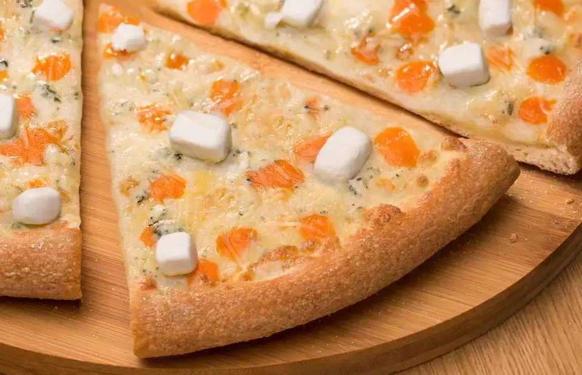
Ось її інгрідієнти:
- Пармезан,
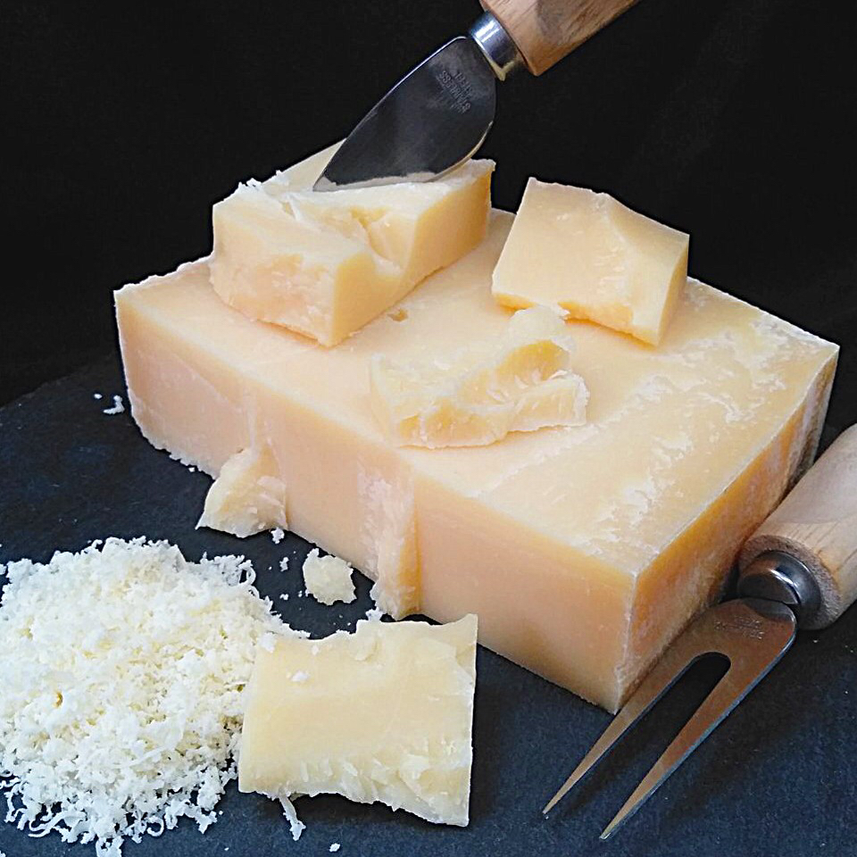
- Моцарела,
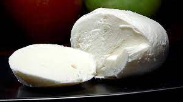
- Чеддер,
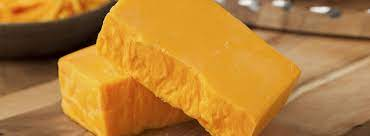
- Фета,
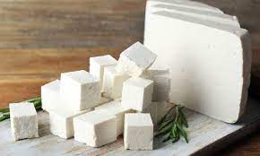
- Бергадер Блю,
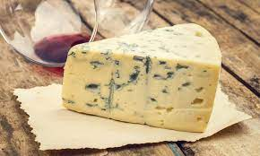
- соус Альфредо.
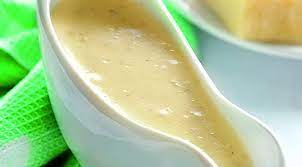
Ось додаткові інгрідієнти які я зазвичай додаю:
- Помідори,
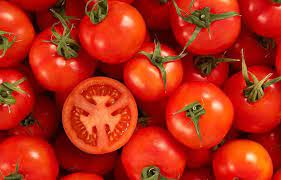
- шинку,
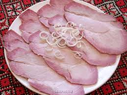
- сирні бортики.
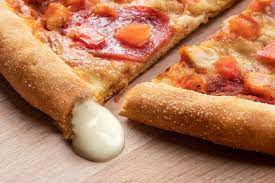
Ось її інгрідієнти:
- Пармезан, 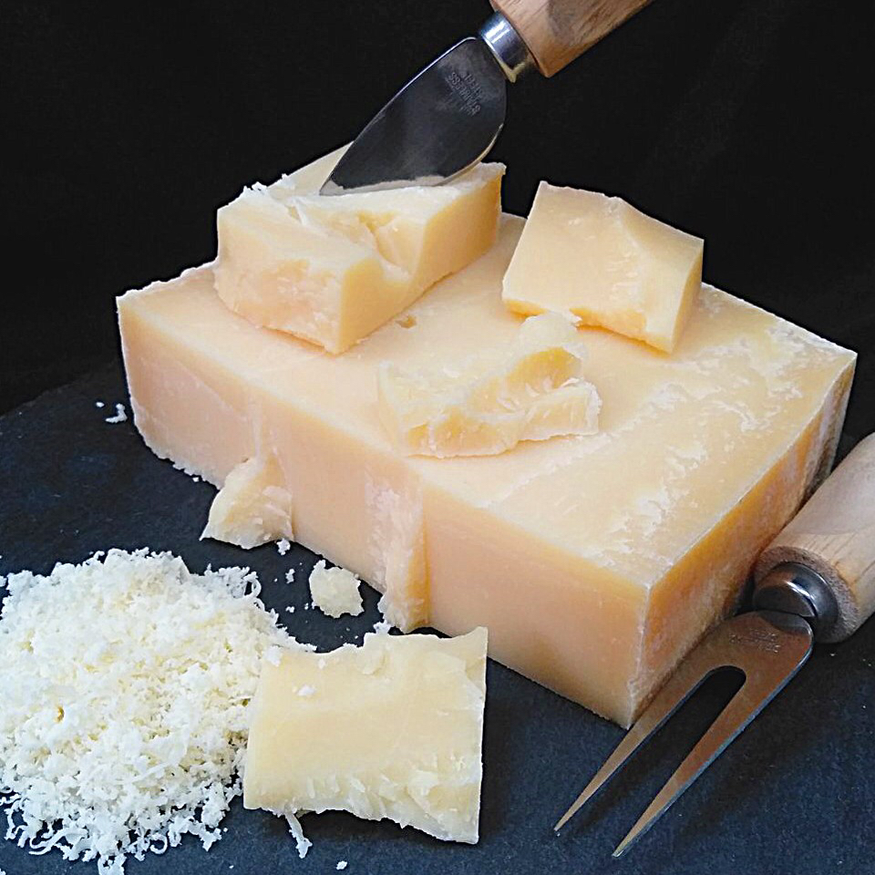
- Моцарела, 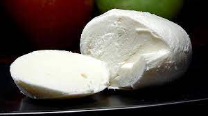
- Чеддер, 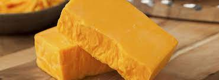
- Фета, 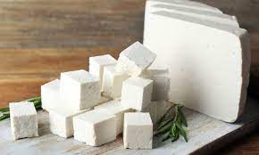
- Бергадер Блю, 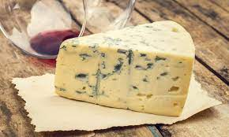
- соус Альфредо. 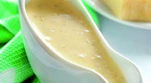
Ось додаткові інгрідієнти які я зазвичай додаю:
- Помідори, 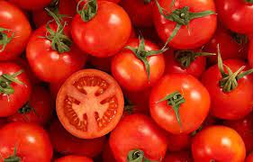
- шинку, 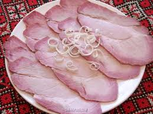
- сирні бортики. 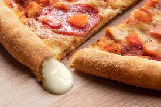
Справжня насолода для всіх сироманів! Цілих 5 сирів в одній піці:
- Ніжний вершковий сир,
- Витриманий пармезан,
- Класичний твердий сир,
- Пікантний дор блю
- І білосніжна моцарела на вершковій основі. Традиційно подається з ягідним соусом.